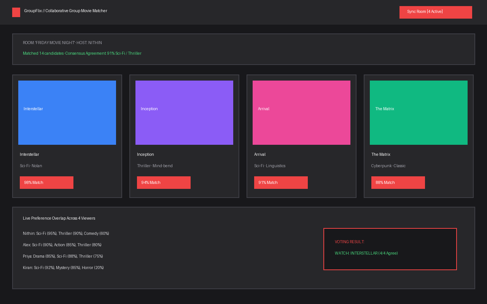
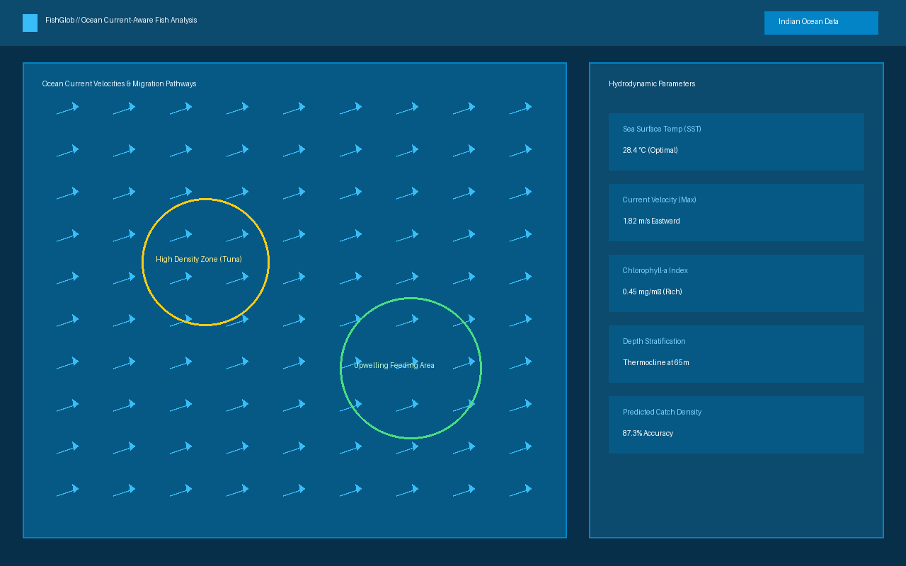
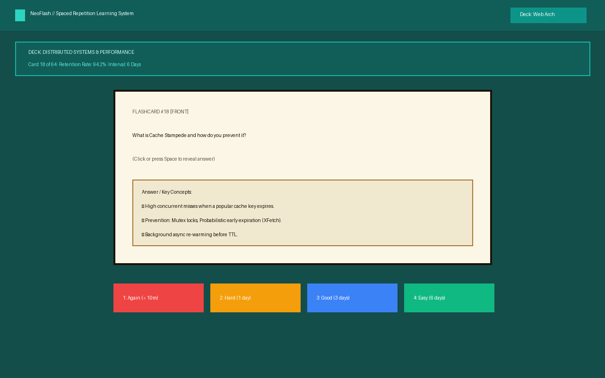

1-1
SkillUp · AI skill gap analyzer
Hack101 · 2ndShows what to learn next for a target role based on automated resume parsing and job requirements.
CSE student at Amrita and SDE intern. I build AI-driven and web products, and I like turning ideas into software people actually use.
Software engineer in the making: CSE student at Amrita, SDE intern, Hack101 runner-up.
CSE student at Amrita and SDE intern. I build AI tools and web apps, turning ideas into reliable software people actually use.
Four levels so far. Open one for the case study.
Shows what to learn next for a target role based on automated resume parsing and job requirements.
Recommends movies a whole group can agree on through real-time preference voting and consensus algorithms.
Analyses fish distribution data with ocean-current context and hydrodynamics.
A web platform for learning with flashcards and spaced repetition algorithms.
AI skill gap analyzer

Job descriptions and candidate resumes often speak completely different vocabularies. SkillUp extracts requirement matrices from target roles, identifies missing competencies, and maps out an actionable milestone roadmap.
Movie recommendation

Picking a film when a group of friends gathers often leads to decision fatigue. GroupFlix creates synced virtual rooms where members cast votes and preferences, calculating an optimal consensus choice without spoiler friction.
Current-aware fish analysis

Traditional marine fisheries analysis ignores the impact of shifting ocean currents. FishGlob correlates hydrodynamic telemetry data with historical fish catch distributions to identify feeding zones and migration corridors.
Learning platform

A lightweight, distraction-free flashcard learning platform tailored for software developers mastering computer science theory, system design, and algorithmic problem-solving.
For SkillUp, an AI-based skill gap analyzer.
Competed in the intensive 36-hour Hack101 hackathon; built SkillUp from scratch to tackle workforce reskilling, evaluated by industry judges on technical depth and product viability.
Tech Startup / SDE Intern
Amrita Vishwa Vidyapeetham · B.Tech in Computer Science and Engineering (Expected 2026)
One page with education, experience, projects and awards.
| Education | CSE · Amrita Vishwa Vidyapeetham |
|---|---|
| Experience | SDE intern · Tech Startup |
| Projects | SkillUp, GroupFlix, FishGlob, NeoFlash |
| Awards | Hack101 · 2nd place |
Let's build something extraordinary together. I'm open to SDE roles, collaborations, and discussions.
Software Engineer in the making
Available commands in the terminal prompt:
| Command | Description |
|---|---|
help | Display list of terminal commands |
about | View background, education, and status |
projects | List all four project levels |
awards | View Hack101 2nd place achievement |
experience | View internship and education history |
resume | Download Nithin's resume PDF |
contact | Get in touch via email, GitHub, or LinkedIn |
skillup | Open Level 1-1: SkillUp case study |
groupflix | Open Level 1-2: GroupFlix case study |
fishglob | Open Level 1-3: FishGlob case study |
neoflash | Open Level 2-1: NeoFlash case study |
whoami | Display developer identity summary |
hire | Jump directly to contact info |
map | Show the ASCII level progression map |
clear | Clear terminal screen |
exit / up | Return to the surface world |
Unknown command or level. Try typing help or clicking one of the navigation links.